NCSSM · PH4922 Research in Physics III
Experimental Analysis of Wire-Airfoil Corona Thrusters for Low-Voltage Electrohydrodynamic Propulsion
Abstract
Advances in propulsion systems have rekindled interest in electrohydrodynamic (EHD) propulsion, also known as corona wind thrust. EHD generates wind without moving parts by ionizing air molecules through an asymmetric electric field and transferring momentum to neutral air molecules. Accurate prediction of thruster performance remains difficult without FEA or CFD tools due to nonlinear plasma–field interactions. This low-voltage study examines the effects of varied emitter and collector electrode spacing in wire-airfoil electrode configurations on thrust, onset voltage, current, and corresponding efficiencies. Experimental results from a custom-built EHD system using a 6 kV high-voltage power supply, picoammeter, and analytical balance are used to characterize and analyze the effects of varied electrode geometry. Experiments were conducted across collector electrode diameters ranging from 5 to 8 mm and electrode gap distances from 1 to 3 mm. Thrust measurements were obtained by recording the downward force on an analytical balance created by the corona wind generated during operation.
Nomenclature
| Eonset | Magnitude of the electric field where corona discharge becomes visible (V/m) |
| E0 | Dielectric strength of air (assumed: 3×106 V/m) |
| δ | Air density and temperature factor (assumed: 1 atm, 25°C) |
| r | Radius of the emitter electrode (m) |
| k | Environmental constant (Peek's Law; assumed: 0.308) |
| d | Distance between emitter and collector electrode (m) |
| g | Distance between emitter electrodes (m) |
| F | Force or thrust generated by the corona wind (N) |
| I | Current through the corona discharge (A) |
| μ | Ion mobility (m²/(V·s)) |
| E | Electric field (V/m) |
| ε0 | Vacuum permittivity (F/m) |
| Q | Enclosed charge (C) |
| A | Area (m²) |
| V | Applied voltage between emitter and collector (V) |
1. Introduction
1.1. Overview of Corona Wind Propulsion
Corona wind propulsion is the phenomenon in which corona discharge is used to generate thrust [3]. When a high voltage is applied between two electrodes across a gap, an asymmetric electric field forms that is capable of ionizing ambient air. In a traditional needle-plane configuration, one electrode has a very small radius of curvature while the other is flat. This sharpness contrast concentrates the electric field at the needle tip, producing high-magnitude fields that approach the ionization threshold of air, approximately 3 MV/m [5].
For corona wind generation, the electric field must remain just below the breakdown limit. If this threshold is exceeded, the air undergoes electrical breakdown and arcs between the electrodes. This shorts the electrodes and collapses the space-charge region, ceasing corona production. In this arc regime, no useful thrust is produced, as ions do not drift through the gap but instead discharge instantaneously. However, when the field is maintained just under breakdown, ionization occurs without arcing, allowing the strongest possible steady-state plasma formation and maximizing charge drift across the gap.
When the electric field reaches this sub-breakdown level, the strong positive potential at the emitter removes electrons from nearby air molecules. The resulting positive ions accelerate away from the emitter toward the negatively biased collector. As these ions move through the gap, they collide with neutral molecules, transferring momentum and generating a bulk airflow.
1.2. Conventional Thrusters and Wire-Airfoil Geometry
Conventional corona thrusters typically use a thin needle or wire as the emitter and a flat or cylindrical plate as the collector. While these geometries create strong field magnification, they do not always support sustained airflow [1]. Ions travel directly from the sharp emitter to the flat collector, but the flat surface abruptly terminates the ion motion, causing the flow to dissipate quickly. To address this limitation, this study replaces the point-like emitter with a one-dimensional wire, effectively creating a continuous line of sharp needle tips, and replaces the flat collector with an airfoil-shaped collector designed to maintain ion movement and improve downstream flow development. In this configuration, the emitter generates the corona discharge, while the airfoil collector shapes the electric field and guides ion trajectories to sustain airflow [1].
1.3. Corona Onset Estimation
Corona onset behavior is modeled using Peek’s Law (2), an expression that estimates the electric field required for corona initiation around cylindrical electrodes [4]. Both the emitter wire and the leading edge of the airfoil can be treated as cylinders of differing radii, making Peek’s formulation appropriate for predicting onset voltage as electrode spacing and radii are varied.
1.4. Motivation
Existing EHD thruster studies operate at voltages substantially greater than 6 kV to achieve measurable thrust [2]. In contrast, the system developed in this work produces quantifiable thrust, discharge current, and corona onset behavior while operating below 6 kV. This performance results from the combined effects of emitter sharpness, controlled airfoil geometry, and optimized emitter–collector spacing. The system demonstrates the feasibility of low-voltage EHD propulsion and provides new insight into how wire–airfoil electrode geometries influence ionization dynamics and thrust production.
2. Objective
The primary objective of this study is to analyze how variations in electrode spacing and collector radius influence corona onset voltage, current draw, and thrust output. According to Peek’s Law, a larger difference in curvature between two electrodes increases electric-field magnification, suggesting that a sharp emitter paired with a flat collector would create the strongest local fields and highest ionization levels. However, a flat collector abruptly halts ion motion and does not support sustained or directed airflow. To overcome this limitation, the present work evaluates collector electrodes with differing radii to identify a geometry that preserves strong field enhancement while guiding ions effectively in order to maximize thrust. Beyond geometric optimization, this study provides a first look at corona wind behavior in a low-voltage regime below 6 kV, a range never examined in existing EHD research. By characterizing wire–airfoil configurations with multiple airfoil sizes, this work aims to expand understanding of low-voltage EHD dynamics and establish practical design considerations for compact and efficient electrode systems [6].
3. Theoretical Background
3.1. Electrohydrodynamics (EHD)
Electrohydrodynamics (EHD) is the study of the behavior of electrically charged fluids in the presence of electric fields. EHD combines the principles of electrodynamics and fluid dynamics. In the context of corona wind propulsion, EHD describes the acceleration of ions due to electrostatic forces, creating airflow. This phenomenon becomes significant when a strong electric field is generated, usually by applying a high voltage across asymmetric electrodes, such as a sharp emitter and a larger collector. Corona wind generation occurs when the applied electric field is sufficient to ionize air molecules near the emitter tip, yet below the dielectric breakdown threshold of air (~3 MV/m under standard conditions: 25°C, 1 atm). Breakdown results in arcing, which disrupts the desired ion flow and damages system components.
3.2. Biefeld-Brown Effect
Initially mischaracterized as an anti-gravity effect, the Biefeld-Brown effect is an electrical phenomenon observed through thrust generation when a pair of asymmetric capacitors are subjected to a high voltage. This effect was later attributed to the movement of ions and subsequent momentum transfer to neutral air molecules. The key mechanism is the ionization of ambient air near sharp electrodes. Resulting ions become accelerated by the electric field and collide with neutral particles, producing a net directional force. The total force F acting on the charge distribution is given by (1).
Where ρe is the density of the space charge, E is the local electric field, and the integral is taken over the volume V of ionized air. This equation describes the relationship between the net force and its derivation from space charge density as excess electrical charge carried through ions in a region of space, and the electric field. It forms the physical basis for corona wind propulsion.
3.3. Peek’s Law
Peek’s Law provides an empirical estimate of the electric field strength at which the corona becomes visible around a conductor, specifically for cylindrical wires. It is essential in high-voltage systems and provides an understanding of the relationship of corona onset for corona wind thrusters. Several formulations of equations exist; however, for wire-plane configurations, (2) is ideal [5].
In which Eonset is the electric field in which the corona discharge begins to occur in (V/m), E0 is the dielectric strength of air ~3MV/m, δ is the relative air density factor presented in (3). r is the radius of the wire and k is the empirical surface roughness factor ~0.308 for smooth conductors.
Where δ is the unitless air density factor, p is the measured air pressure in Pa, and T is the measured temperature in K. Both p0 and T0 represent measured pressure and temperature equivalencies at 1 atm, 25°C respectively. Peek's Law is a semi-empirical; derived from both experimental and theoretical understanding of electrostatics. The derivation can be approximated by modifying the basic expression of the electric field near a cylindrical conductor (4).
Where the electrode geometry consists of an infinitely long cylinder of radius r, at an electric potential V, surrounded by air and a cylindrical shell at distance R, the surface electric field Esurface can be determined.
3.4. Electrode Sharpness and Electric Field Enhancement
The generalization presented in Equation (4) allows for estimations of ionization onset as a function of electrode geometry; however, it should be noted that this formula has increased inaccuracy with lower radii of curvature, as used by needle-emitter electrodes. An increase in electrode sharpness enables increased electric field enhancement, allowing ionization to occur at lower voltages, however, Peek’s empirical formulation does not fully capture this magnification. This enhancement of the electric field is fundamental to the operation of corona wind thrusters, since the onset of the corona depends on the magnitude of the electric field E at the emitter tip. This relationship is demonstrated with a derivation of Coulomb's law. (5).
With ε0 being the dielectric permittivity of the vacuum, q being the charge, and r being the distance between the charges. This is conceptually analogous to the radius of curvature of a real electrode. In electrostatics, the low radius of curvature of the needle describes the tight bend of the tip of the needle. This small radius acts as a low distance between charges in the field equation above, increasing the local electric field strength with an inverse-square proportionality.
3.5. Gauss’s Law and Charge Concentration
It is well known that charge across a medium is concentrated along its surface. For a charged metal sphere, abundant electrons are evenly distributed along the surface. According to Gauss's law, (6), it can be determined that the abundance of electrical charge will be of high magnitude in regions where the rate of change of the surface area is high assuming constant electrical permittivity.
where A is the area of the medium and Qenc is the enclosed charge.
3.6. Ionization Mechanism
Corona discharge occurs when the electric field at a point in space exceeds a critical value, causing ionization of air molecules. Along surfaces of sharp tips, the local electric field becomes concentrated, leading to the creation of high-magnitude electric fields. The process of ionization involves the acceleration of free electrons to energies sufficient to ionize neutral air molecules, leading to the production of positive ions and free electrons. Corona discharge is formulated by chain reactions, formulated by this mechanism, which leads to a sustained corona. This process can be chemically analyzed as electron excitation and ionization in atmospheric gases.
3.7. Electrostatic Repulsion
In a linear configuration consisting of multiple emitter electrodes, horizontal forces can arise due to asymmetrical electric field interactions between neighboring emitters. Similarly, for a set of point charges, electric field lines begin to bend outward as they deviate from the center, as shown in Fig. 1.
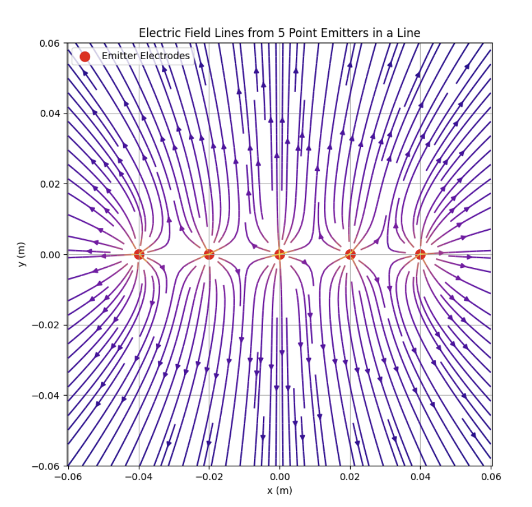
Each emitter is held at the same high voltage (6kV), so each carries the same polarity. Similar to charged particles, emitters repel each other electrostatically. Emitter-electrodes with low spacing between one another can cause electric field lines to merge with adjacent emitters. While emitters themselves are fixed, the electric field vectors between them experience lateral distortion, and ions emitted from one emitter can become deflected by neighboring electric fields, producing lateral ion transportation.
4. Experimental Design and Methodology
4.1. Experimental Objectives and Configurations
All experiments were conducted to evaluate how emitter–collector electrode spacing and collector electrode radius affect corona onset voltage, discharge current, and thrust. A test stand was built around interchangeable electrode modules, allowing different geometries to be compared under identical electrical and environmental conditions. Three configurations were examined: a symmetric needle–needle pair, a needle–plane baseline, and the primary wire–airfoil configuration.
4.2. Thruster Assembly and Electrode Fabrication
Thruster assemblies were mounted onto 3D-printed housings aimed at maintaining alignment between the emitter and collector while adjusting the electrode gap. Collector electrodes for the wire–airfoil configuration were fabricated from stainless-steel foil cut to a length of 32 mm and wrapped around an airfoil-shaped 3D printed support. The emitters consisted of stainless-steel elements: sharpened sewing needles in the preliminary configurations and a stainless steel wire with a measured radius of approximately 33 μm in the wire–airfoil configuration. The wire emitter was tensioned across the 3D-printed frame and electrically connected by wrapping its ends around an alligator clip and securing them with insulating tape to ensure a low-resistance, mechanically stable contact with the system.
To minimize electrostatic interactions, collector electrodes were connected using a stainless-steel lead routed several centimeters above the electrode surface. Elevating this lead reduced Coulombic attraction or repulsion between the electrodes and prevented lateral forces that could disturb precision thrust measurements.
4.3. Electrical Circuit and Instrumentation
High voltage was supplied by a Frederiksen 80703 DC power supply rated up to 6 kV. The positive terminal was connected to the emitter, and the return terminal was connected to the collector. Discharge current was measured using a low-current digital multimeter placed in series between the collector-HVPS end of the circuit. A simplified schematic of the measurement circuit is shown in Fig. 2.
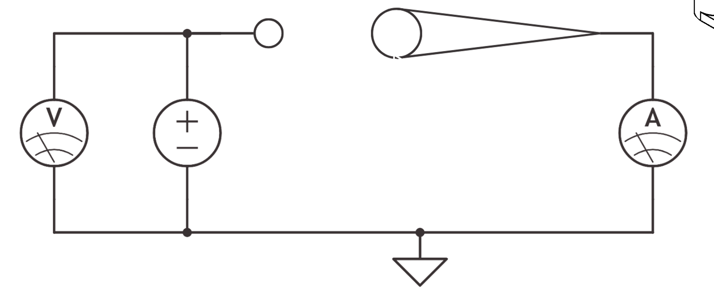
4.4. Operating Procedure and Environmental Conditions
For each configuration, the applied voltage was increased from 0 kV in 100 V increments until corona onset was observed, then further increased until breakdown was reached. To support comparison with Peek’s Law, the radii of curvature of all needle tips were measured using a fluorescence microscope, calibrated reticle, and Lab View image-processing software. Needle tips with visibly inconsistent or damaged points were gently sanded and re-measured until a uniform tip radius was achieved across all needles used in the experiments. The radius of the wire emitter in the wire–airfoil configuration was confirmed with the same microscope and image-processing software. All experiments were performed in still laboratory air at approximately 75°F and atmospheric pressure.
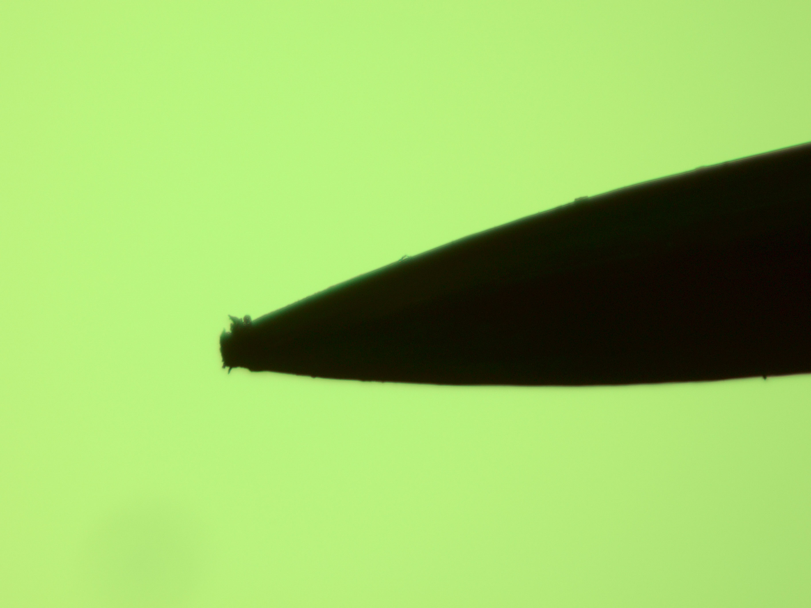
4.5. Needle–Needle Electrode Configuration
A preliminary electrode setup was constructed using two sharpened stainless-steel sewing needles arranged in a symmetric needle–needle configuration with a gap of 2 mm. Each needle was electrically connected by an insulated 14 AWG copper wire, where the blunt end of the needle was inserted into the copper wire, soldered in place, and sealed with heat-shrink insulation. The two needle assemblies were mounted in a 3D-printed frame that translated along a Vernier Dynamics Cart Track, allowing the needle–needle separation to be varied with sub-millimeter accuracy as shown in Fig. 4.
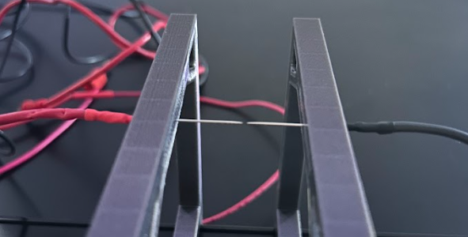
One needle was connected to the positive 6 kV output of the high-voltage supply, and the other was connected to ground, forming a symmetric high-field region between the tips. This configuration was used primarily as a calibration mechanism. This system provided an initial analysis of corona in a symmetric system and verified the proper operation of the high-voltage supply in preparation for the testing of more complex geometries.
4.6. Needle–Plane Electrode Configuration
A secondary baseline configuration was constructed by pairing a single needle emitter from the setup described above with a flat copper collector plate. The needle was mounted in the same 3D-printed frame, while the copper collector electrode was fixed across from the needle and aligned so that the needle tip faced the center of the copper plate.
The needle–plate separation was set using the Vernier Dynamics Cart Track and friction-fit in place once the desired gap was reached, as shown in Fig. 5.
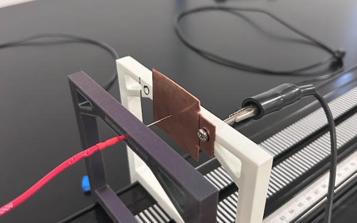
The needle was connected to the positive terminal of the 6 kV supply, and the copper plate was connected to ground. This classic pin-to-plate arrangement is a standard corona discharge geometry and served as a control for the experiments that followed. For the needle–plane configuration, voltage was varied from 0 to 6 kV in 100 V increments. For this system, the corresponding discharge current confirmed corona discharge formation.
4.7. Wire–Airfoil Electrode Configuration
The primary geometry investigated in this study was a wire–airfoil configuration designed for optimal ion flow and is the first system to measure thrust. The emitter consisted of a stainless-steel wire with radius r ≈ 33 μm, tensioned across a 3D-printed frame such that the wire be parallel to the span of the collector airfoil as shown in Fig. 6.
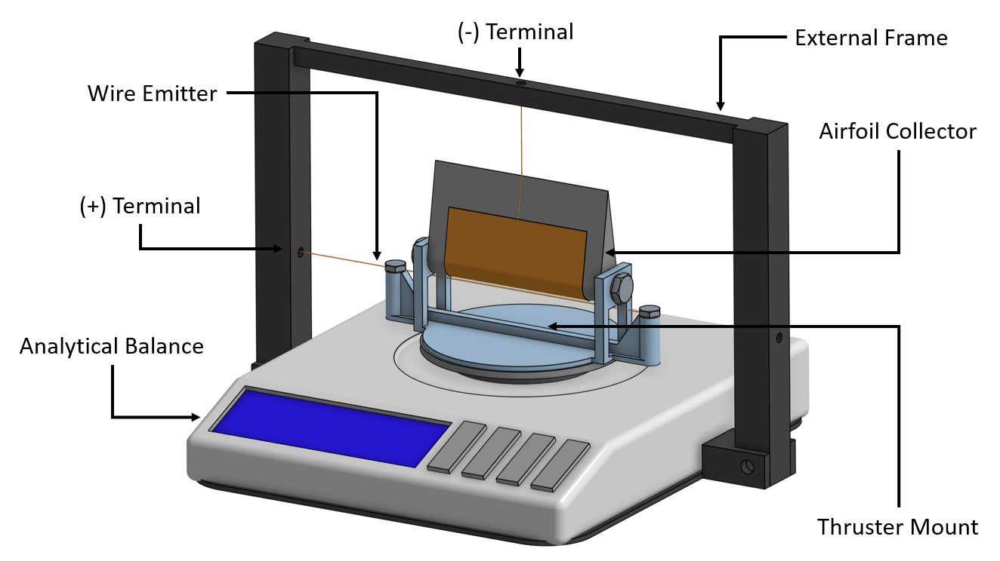
The collector was an airfoil-shaped electrode with a leading edge formed a half-cylinder as depicted in Fig. 7.
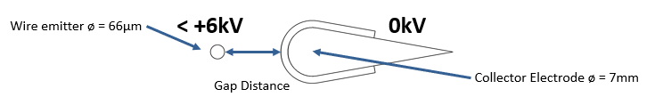
Airfoil leading-edge diameters of 5, 6, 7, and 8 mm were tested, corresponding to different collector radii of curvature. Each airfoil had a span of 20 mm plus the leading-edge radius, and stainless-steel foil of length 32 mm was wrapped tightly around the leading edge and secured with tape to form the conductive collector surface. Emitter–collector spacing was varied from 1 to 3 mm. To ensure precise and repeatable gap distances, a dedicated 3D-printed support frame was fabricated for each gap distance. These fixtures helped to remove alignment uncertainty between trials. Electrical connection to the collector was made by attaching the same stainless-steel wire to the collector foil and routing it vertically upward several centimeters above the airfoil, before connecting to the return terminal of the power supply, as shown in Fig. 6. Raising this lead above the discharge region minimized electrostatic interaction between the collector lead and the emitter electrode, preventing additional forces and field distortions that could affect thrust. To allow for swapping between collector geometries, each airfoil insert was attached to the main frame using M3 fasteners. This modular design allowed the same wire emitter, support frame, and thrust measurement setup to be used for all collector radii and gap distances, isolating the effects of slight variations in electrode geometry from other variables. For each combination of collector diameter (5–8 mm) and gap distance (1 to 3 mm), the applied voltage was swept up to 6 kV, in 100 V increments. Additionally, the discharge current and thrust were recorded.
4.8. Thrust Measurement System
Thrust produced as a result of corona discharge was measured using an analytical balance with a resolution of ± 0.001 g and a maximum capacity of 20 g. The entire electrode assembly (3D-printed housing, emitter, collector, and wiring) was placed directly on the scale platform, ensuring that any net vertical force acting on the thruster was transmitted to the balance.
When activated, ions accelerated from the emitter toward the collector collide with neutral air molecules and transfer momentum, producing a flow of air (corona wind). By Newton’s third law, the reaction to this momentum transfer exerts a thrust on the thruster assembly. The scale detects this thrust as a change in the apparent weight of the system. For each test, the baseline mass reading was recorded with the HVPS deactivated, followed by the steady-state reading at the desired operating voltage. The difference in indicated mass, Δm, was converted to thrust using the equation below: (7)
where g is the acceleration due to gravity. In the analysis, the magnitude of the thrust was used, and the sign was used to confirm the direction of the net force.
It is important to note that Coulombic forces between the emitter, collector, and their supply leads are internal to the thruster-scale system. These internal electrostatic forces act between components that are all resting on the same balance platform and therefore cancel when considering the net external force on the system. As a result, they do not change the reading of the balance. Only the exchange of momentum between the thruster and the surrounding external medium produces a vertical net force on the balance. The balances measure the change in apparent weight, therefore isolating the thrust due to corona wind rather than internal electrostatic attraction or repulsion.
Ahead of measurement, thrust readings were taken once the current and scale output had stabilized at each voltage step. All measurements were performed in still laboratory air at a standard 75°F.
5. Results
The experiments presented in this study characterize how variations in electrode geometry and applied voltage influence corona onset, discharge current, and thrust for the wire–airfoil configuration. The needle–needle and needle–plane configurations were used only as qualitative benchmarks. The needle–needle system produced no observable corona due to cross-corona effects between the opposed tips, while the needle–plane arrangement produced visible, localized corona but no thrust above the resolution of the analytical balance.
For the wire–airfoil configuration, current–voltage, thrust–voltage, and thrust–current relationships are presented first to establish how discharge current and thrust scale with applied voltage. Subsequent subsections summarize the effects of collector radius and emitter–collector spacing by comparing performance across airfoils with leading-edge diameters from 5–8 mm and gap distances from 1–3 mm. Observations of time-dependent current behavior and ozone generation are reported at the end of the section.
5.1. Current vs. Applied Voltage
Figures 8 and 9 display the discharge current as a function of applied voltage for the wire-airfoil thruster. In all cases, the current remains near zero at low voltages and then rises sharply once a distinct onset voltage is reached. Above onset, the current increases monotonically with applied voltage over the range tested.
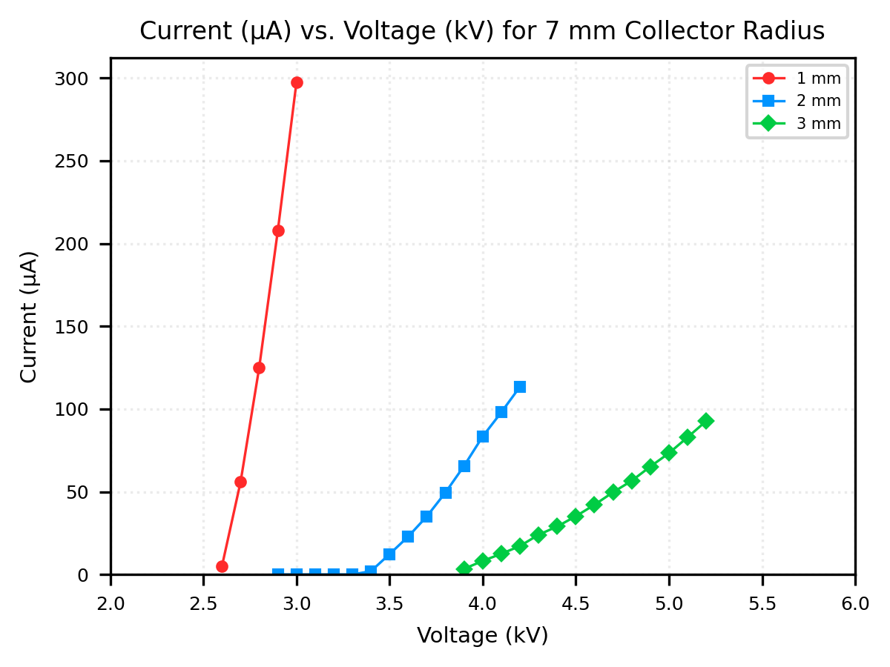
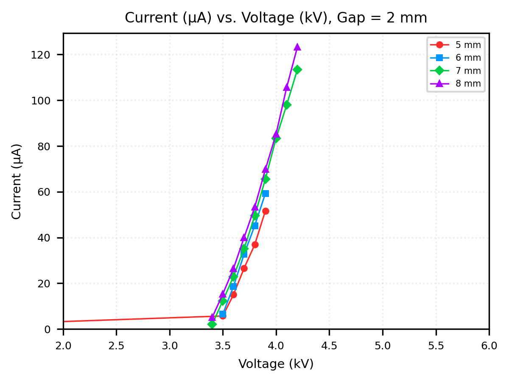
5.2. Thrust vs. Voltage
Figures 10 and 11 present the measured thrust as a function of applied voltage for the same geometries. At low voltages, thrust is below the resolution of the scale, yet becomes measurable as it nears the corona onset voltage, and then increases with applied voltage for all tested configurations.
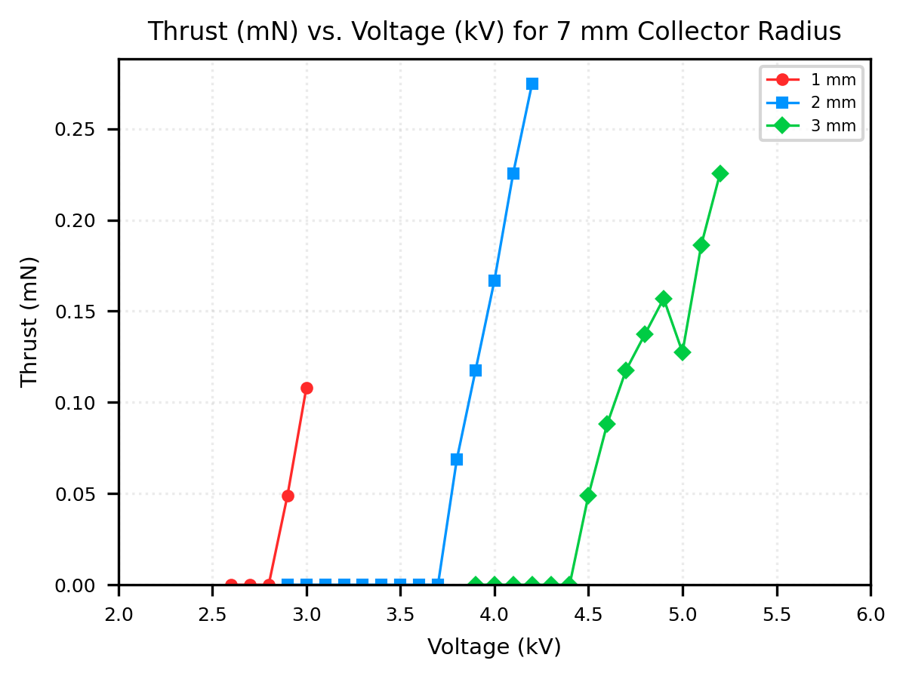
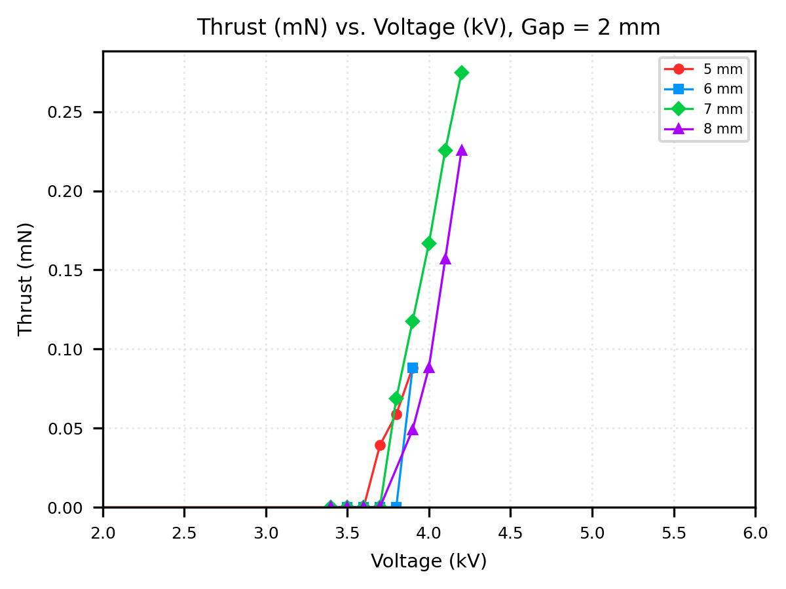
5.3. Thrust vs. Current
Figures 12 and 13 compare thrust directly to discharge current. Over the measured range, thrust increases approximately monotonically with current for all geometries tested.
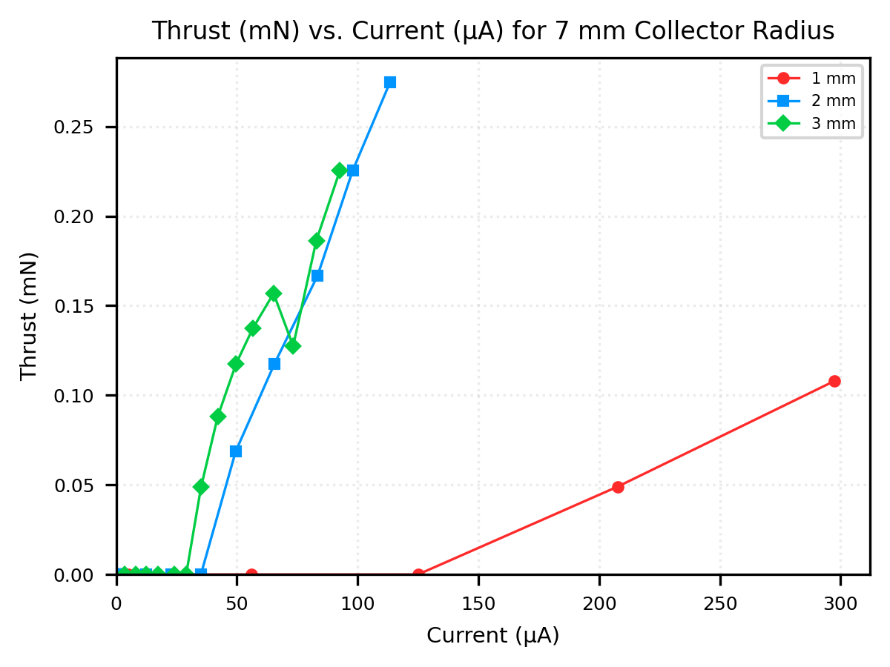
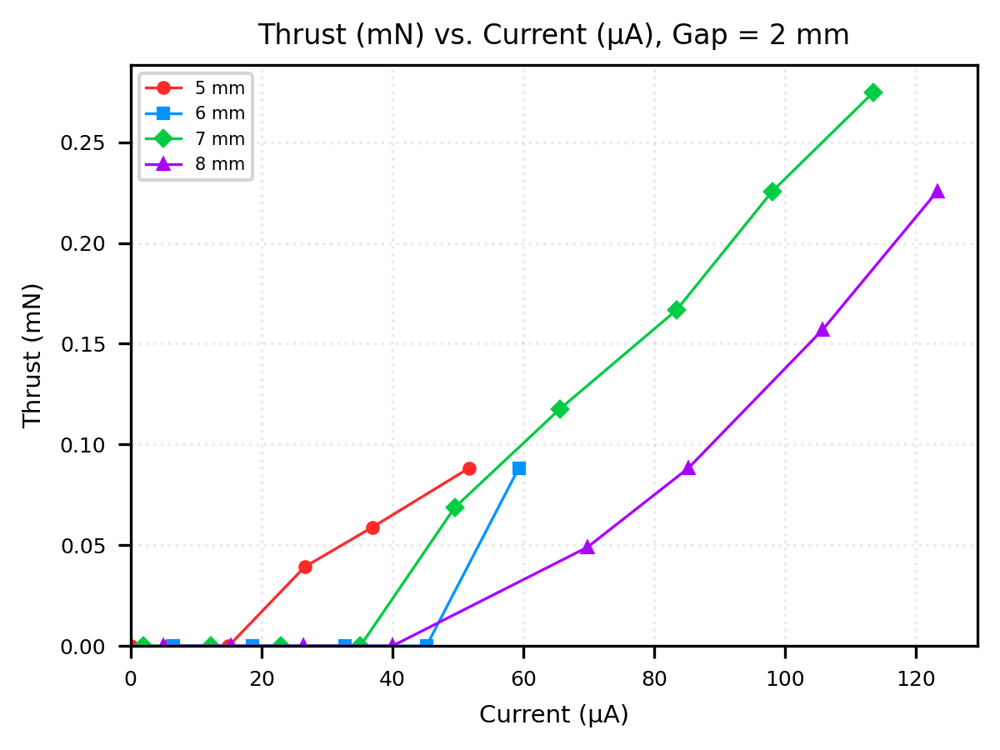
5.4. Collector Electrode Radius Variation
At a fixed gap of g = 2 mm, decreasing the collector diameter from 8 mm to 5 mm changes both the onset voltage and the slopes of the current–voltage and thrust–voltage curves. Smaller collector radii generally correspond to lower onset voltages and higher currents and thrusts at the same applied voltage within the tested range.
5.5. Electrode Spacing Variation
For a fixed collector diameter of 7 mm, reducing the emitter–collector gap from 3 mm to 1 mm similarly shifts the onset voltage and modifies the current and thrust levels. Smaller gaps exhibit earlier onset and larger measured current and thrust at a given applied voltage.
5.6. Current Time-Dependency
A time-dependent behavior in the discharge current was observed during data collection. When the applied voltage was stepped to an increased value and held constant, the measured current did not immediately reach a steady value. Current increased gradually over a period of several seconds and, in some cases, more than doubled relative to the initial reading immediately after the voltage change. To reduce the influence of this effect, all current and thrust values used in the analysis were recorded approximately 10 s after each voltage step, once the current reading appeared visually stable on the meter.
5.7. Ozone Generation
During experimentation, noticeable ozone production was observed, particularly when operating at higher voltages and smaller electrode gaps for extended periods. A distinct ozone odor was detected during several initial trials, although no strong odor was present during the final data-collection runs, where the dwell time at each voltage step was shorter. Ozone levels were not quantified in this study.
6. Discussion
6.1. Performance of the Wire-Airfoil Configuration
The results demonstrate that the wire-airfoil configuration can generate measurable thrust at voltages below 6 kV, and that both electrode spacing and collector radius strongly influence performance. In contrast, the preliminary needle-needle and needle-plane configurations either failed to produce corona or produced highly localized corona with no measurable thrust, underscoring the importance of geometric tailoring for practical EHD propulsion.
6.2. Current-Voltage and Thrust Characteristics
The current-voltage curves show a clear onset threshold followed by a monotonic increase in current with applied voltage. The shift in onset voltage and the steeper post-onset slopes observed for smaller gaps and smaller collector radii are consistent with increased electric-field concentration near the emitter and collector surfaces. This behavior qualitatively agrees with predictions from Peek's Law, in which stronger field enhancement lowers the corona onset field and promotes higher space-charge densities for a given applied voltage.
The thrust-voltage curves follow a similar pattern to the current-voltage data: thrust appears only once corona is established and increases with applied voltage. The approximately monotonic, near-linear relationship between thrust and current suggests that, over the operating range studied, thrust is primarily limited by the total ion current rather than by drastic changes in the flow structure. In other words, once a stable discharge is established, increasing the transported charge directly increases the momentum imparted to the neutral air.
6.3. Geometric Trade-offs
Variations in collector radius and gap distance highlight the trade-offs inherent in low-voltage EHD design. Smaller collector radii and smaller gaps both promote higher electric fields and stronger discharges, improving thrust at a given voltage. However, these same conditions bring the system closer to electrical breakdown and can exacerbate non-ideal effects such as cross-corona, arcing, or enhanced ozone production. The absence of measurable thrust in the needle-plane configuration, despite visible corona, emphasizes that simply maximizing local field strength at a point is not sufficient; the geometry must also support a useful volume of ion transport and a favorable flow path.
6.4. Transient Behavior and Reactive Byproducts
The observed time-dependence of the current indicates that the discharge is not strictly steady over the first several seconds after a voltage step. Possible causes include electrode conditioning, gradual heating, or slow changes in space-charge distribution near the electrodes. Because all reported data were taken after a fixed delay, these transients do not affect the relative comparisons between geometries in this study, but time-resolved measurements would be necessary to fully characterize the dynamic response of low-voltage EHD thrusters.
Finally, the qualitative observation of ozone generation confirms that even at relatively low voltages, corona discharge in air produces reactive species. While ozone levels were not measured here, this byproduct has implications for the safe operation of EHD devices in enclosed environments and may impose practical limits on operating voltage, duty cycle, or required ventilation for future systems.
6.5. Sources of Experimental Uncertainty
Many trials exhibited variability that can be attributed to the small electrode gaps and slight imperfections along the surface of the stainless steel foil collector. When the collector foil was cut to a 32 mm length and wrapped around the electrode, the scissors introduced small burrs and sharp edges along the cut. These irregularities locally enhanced the electric field, causing premature arcing at voltages lower than the nominal onset and disrupting otherwise stable corona discharge conditions. As a result, some geometries produced unusual plasma structures along the emitter wire and inconsistent current and thrust measurements, particularly near the onset region where the system is most sensitive to changes in geometry and surface finish.
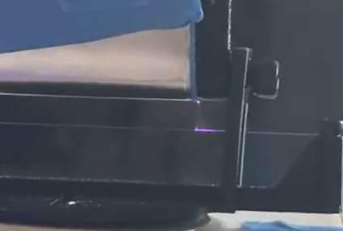
7. Conclusion
7.1. Summary of Experimental Findings
This study experimentally investigated a wire-airfoil corona thruster operating in a low-voltage regime below 6 kV, with a focus on how emitter-collector spacing and collector radius affect corona onset, discharge current, and thrust. By comparing multiple airfoil leading-edge diameters and gaps while keeping the emitter geometry and operating conditions fixed, this study demonstrated that the wire-airfoil configuration can produce measurable thrust where conventional needle-needle and needle-plane systems either fail to sustain a useful discharge or generate only highly localized corona with no detectable thrust. These results confirm that geometric tailoring of both emitter and collector is essential for practical electrohydrodynamic propulsion at modest voltages.
7.2. Role of Geometry and Electric-Field Enhancement
Current-voltage and thrust-voltage measurements showed a clear onset threshold followed by monotonic increases in both current and thrust with applied voltage. Decreasing the collector radius and reducing the electrode gap systematically lowered the onset voltage and increased both current and thrust at a fixed applied voltage, consistent with enhanced electric-field concentration predicted by Peek's Law and basic electrostatic arguments. The approximately monotonic relationship between thrust and current suggests that, over the operating range tested, thrust is primarily limited by the total transported charge rather than by dramatic changes in flow structure, reinforcing the interpretation of thrust as a direct consequence of ion-driven momentum transfer to the surrounding air.
7.3. Limitations and Design Implications
The experiments also highlighted important trade-offs and limitations. Smaller radii and gaps, while beneficial for performance, push the system closer to breakdown and make it more sensitive to small imperfections in electrode fabrication, such as burrs in the stainless-steel foil that locally enhance the electric field and trigger premature arcing. Time-dependent current behavior and qualitative ozone generation further indicate that low-voltage EHD thrusters are not strictly steady devices and that reactive byproducts and transient effects must be considered in practical designs.
Overall, the results provide an initial design map for low-voltage wire-airfoil corona thrusters and demonstrate that meaningful thrust can be achieved without resorting to very high voltages. The work establishes a foundation for more detailed geometric optimization, high-fidelity computational modeling, and systematic studies of transient behavior and chemical byproducts. Together, these future efforts can build on the present findings to advance compact, efficient EHD propulsion systems for applications where silent operation, the absence of moving parts, and low-voltage compatibility are key design drivers.
8. Future Work
8.1. Geometric Optimization
The results of this study suggest several directions for future work. First, experimental analysis of smaller collector radii should be pursued. The data collected in this study indicate that reduced collector radius enhances thrust at a constant electrode gap and voltage; therefore, systematically decreasing both the emitter wire radius and the airfoil leading-edge radius could further increase performance while keeping the operating voltage below 6 kV. Achieving these smaller radii is likely to require manufacturing techniques beyond those used here, since the stainless-steel foil does not bend cleanly around very small curvatures without leaving gaps between the foil and the 3D-printed airfoil, which alters the ideal cylindrical cross-section.
8.2. Computational Modeling and Simulation
Another priority is the development of a computational model for the wire-airfoil and related geometries. Such a model would reduce the tedious nature of manual data collection, even with removable electrodes, and, given the small scale of the thrusters involved, would help minimize human measurement error. Incorporating Peek’s Law and related electrostatic formulations in a geometry-specific framework could enable predictive computations of onset voltage, current density, and expected thrust. Numerical methods such as finite-element electrostatic solvers combined with computational fluid dynamics (CFD)-based EHD simulations could then be used to explore a wider parameter space-including higher voltages, alternative gap distances, and varied airfoil shapes-without requiring physical hardware for each configuration. However, the development of a high-accuracy model remains challenging due to the inherent complexity of EHD systems: electrodynamic modeling of ions, plasma formation and chain reactions, and the coupling of fluid dynamics to charged-particle motion all must be treated self-consistently.
8.3. Dynamic Behavior Characterization
Finally, several qualitative observations made in this work could be formalized into more in-depth studies. Time-dependent behavior of the electrical current, including warm-up, drift, and potential electrode conditioning effects, could be characterized using time-resolved current and thrust measurements. Similarly, ozone production could be detected and quantified with an ozone sensor to correlate chemical byproducts with operating conditions and electrode geometry. These extensions would provide a more complete picture of the novel low-voltage EHD thruster performance and help guide the design of practical, compact corona wind propulsion systems.
References
[1] M. Belan, L. Arosti, R. Polatti, F. Maggi, S. Fiorini, and F. Sottovia, “A Parametric Study of Electrodes Geometries for Atmospheric Electrohydrodynamic Propulsion,” Journal of Electrostatics, vol. 113, p. 103616, 2021. doi:10.1016/j.elstat.2021.103616
[2] E. D. Fylladitakis, M. P. Theodoridis, and A. X. Moronis, “Review on the History, Research, and Applications of Electrohydrodynamics,” IEEE Transactions on Plasma Science, vol. 42, no. 2, pp. 358–375, 2014. doi:10.1109/TPS.2013.2297173
[3] S. Park, U. Cvelbar, W. Choe, and S. Y. Moon, “The Creation of Electric Wind Due to the Electrohydrodynamic Force,” Nature Communications, vol. 9, no. 1, p. 371, 2018. doi:10.1038/s41467-017-02766-9
[4] F. W. Peek, “Dielectric Phenomena in High Voltage Engineering,” New York: McGraw-Hill Book Company, 1915.
[5] Z. Qiu, J. Ruan, and S. Shu, “Air Insulation Prediction Theory and Applications,” Science Press Beijing and Springer Nature Singapore, 2019. doi:10.1007/978-981-10-5163-0
[6] H. Xu, Y. He, K. L. Strobel, C. K. Gilmore, S. P. Kelley, C. C. Hennick, T. Sebastian, M. R. Woolston, D. J. Perreault, and S. R. H. Barrett, “Flight of an Aeroplane with Solid-State Propulsion,” Nature, vol. 563, no. 7732, pp. 532–535, 2018. doi:10.1038/s41586-018-0707-9